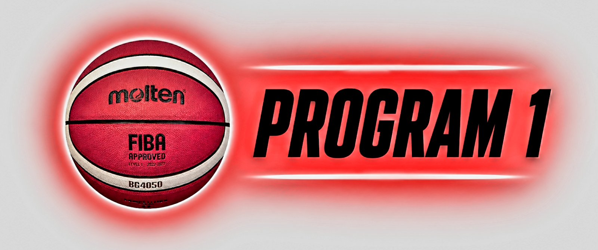
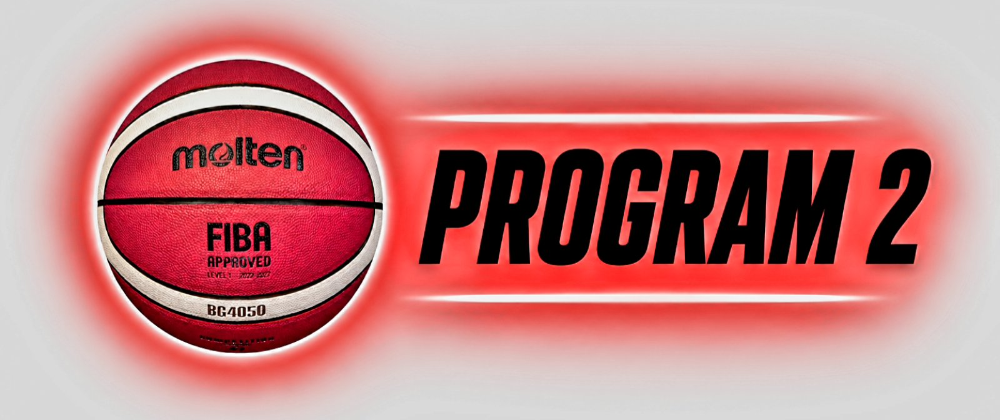
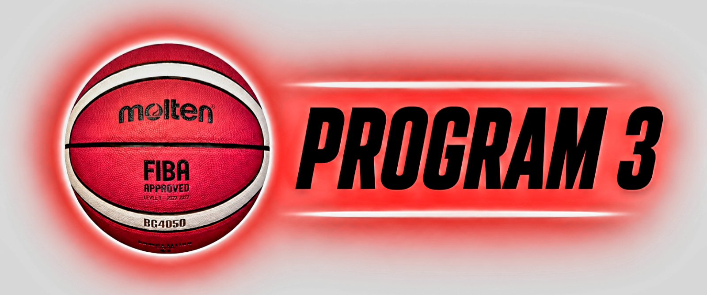

Košarkaški klub Tempo Bratunac nudi više programa treninga prilagođenih uzrastu i nivou igrača. Cilj je pravilan razvoj, napredak i individualni rad sa svakim detetom.

SAZNAJ VIŠE
SAZNAJ VIŠE
SAZNAJ VIŠEUpis u Košarkaški klub Tempo Bratunac je moguć tokom cijele godine. Potrebno je samo da se javite treneru ili putem kontakta na sajtu.
Treninzi se održavaju u više grupa u zavisnosti od uzrasta i znanja.